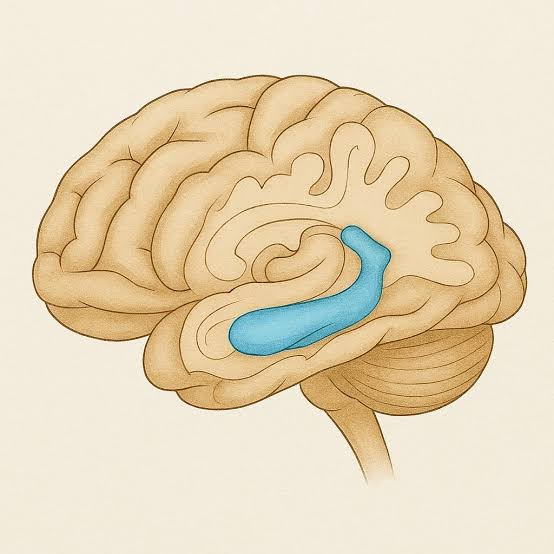

IYNA Virtual Brain Bee 2026
A free, fully online neuroscience competition for high school students in countries without a national Brain Bee — and your pathway to the International Brain Bee (IBB) World Championship. All experience levels are welcome.
Register Now › Become an IYNA Member ›Registration closes July 4, 2026 · Round 1 begins August 8, 2026
About the Competition
The IYNA Virtual Brain Bee is an international neuroscience competition built for high school students in countries that do not yet have an established national Brain Bee. It gives those students a direct pathway to qualify for the International Brain Bee (IBB) World Championship.
Participants are assessed on their knowledge of the brain and nervous system — including neuroanatomy and neurological disease diagnosis — using official, IBB-aligned study materials. The competition is designed to inspire careers in neuroscience research and medicine, and welcomes students at every experience level.
The overall first-place winner becomes the official representative for the IBB World Championship. Every participant receives a certificate of participation.
Program Timeline
All dates are tentative. Detailed schedules and instructions are shared via email and Discord.
Who Can Participate
To match official IBB eligibility, participants must meet all of the criteria below. No exceptions will be made.
- Be between the ages of 13 and 19, currently enrolled in a secondary school (or equivalent) in grades 9–12 for the 2025–26 school year. The winner who advances to the IBB World Championship must be 19 or younger at the time of the IBB competition in November 2026.
- Reside in a country without an active or planned national Brain Bee for the 2026 cycle. If your country appears on the IYNA Virtual Brain Bee ineligible countries list, you must qualify through your local and national Brain Bee instead.
- Have not participated in any local, national, or international Brain Bee competition during the 2025–2026 academic year, regardless of placement or outcome.
Check your eligibility before you register
Participants are responsible for confirming their eligibility using the provided country list and the official IBB website at thebrainbee.org/countries. You may not register for or compete in multiple Brain Bee competitions in the same academic year. Failure to meet eligibility at any stage of verification results in immediate disqualification.
Competition Format
Two rounds. Your final score is the combined total from both, with extra weight possible on higher-difficulty questions.
Preliminary Round
A timed multiple-choice exam assessing neuroanatomy and neurological conditions, drawn from the official study materials. The top-performing competitors — after eligibility and recording review — advance as finalists.
Final Round
A second, more advanced multiple-choice exam with higher-difficulty and clinical-style questions, based on the same study materials. The top 3 finalists are announced at the closing ceremony.
What's at stake
First place becomes the official representative at the IBB World Championship. Second and third place serve as alternates if the winner cannot attend. Every participant receives a certificate of participation.
Study Materials
All questions are drawn from these official, IBB-aligned resources.
Example Questions
These questions will be similar to the level of the multiple-choice questions participants will receive in Round 1.
A scientist is interested in investigating how microglia contribute to Alzheimer's disease. They wish to mutate a gene which is important in microglial responses to amyloid plaques so that it no longer functions normally, and test the effects of this change on behavior in mice.

Mary is a 79-year-old woman who was brought to the clinic by her son, who was worried about her ability to live independently. Mary had become increasingly forgetful over the past several months, occasionally leaving doors unlocked. Last week, she walked out of the house to go to the grocery store and got lost, needing the help of a city official to get home.
- MRI ScanEnlargement of lateral ventricles; atrophy of hippocampus and medial temporal lobe.
- PET ScanDiffuse reduction in glucose metabolism, notably in the temporal lobe.
- ElectroencephalographyReduced high-frequency activity, increased low-frequency activity.
- PolysomnographyMinor reduction in slow-wave sleep detected.
- CSF Analysis / Spinal TapNo abnormalities in CSF pressure, CSF glucose levels, or CSF total protein levels.
- Blood Test (including antibodies and vitamin levels)No abnormalities detected.
- Electromyography / Nerve Conduction StudyNo abnormalities detected.
- Genetic TestNo abnormalities detected.
- Cognitive TestAware of identity, place, and knows the year but not the month. Remembered 0/5 objects after 5 minutes.
Rules & Proctoring
All rules are enforced strictly, with no exceptions. Read these carefully and prepare your setup before exam day.
Work Independently
No textbooks, notes, dictionaries, online resources, translation tools, or help from others. Complete every component on your own.
Back-Facing Camera
A secondary device (phone or tablet) placed behind you must record video and ambient audio for the full exam, capturing your body and primary device.
Locked-Down Browser
The exam runs on secure software (e.g., Safe Exam Browser) with time-limited questions, no pausing, and no tab switching once you begin.
Submit Your Recording
Upload your back-camera recording immediately after the exam. Round 1 recordings are reviewed before finalists are confirmed.
Stable Setup
You need a computer with reliable internet plus your recording device. An internet drop or browser exit ends your session — progress is not recoverable.
Mandatory Platform Demo
Before exam day you must complete a platform demonstration to check device compatibility and practice using the testing system.
More information will be sent to the eligible participants via email.
How to Register
Three steps — and it's completely free. Registration closes July 4, 2026.
Become an IYNA member
All participants must be registered IYNA members before signing up for the Brain Bee. Membership is free.
Sign Up for IYNA ›Register for the Virtual Brain Bee
Once you're an IYNA member, complete the official Virtual Brain Bee registration form.
Open Registration Form ›Join the Discord for updates
Schedules, instructions, and answers to your questions are shared throughout the season on Discord and by email.
Join the Discord ›Ready to test your knowledge of the brain?
Join students around the world in the 2026 IYNA Virtual Brain Bee. Free, online, and open to all experience levels.
Register Now ›